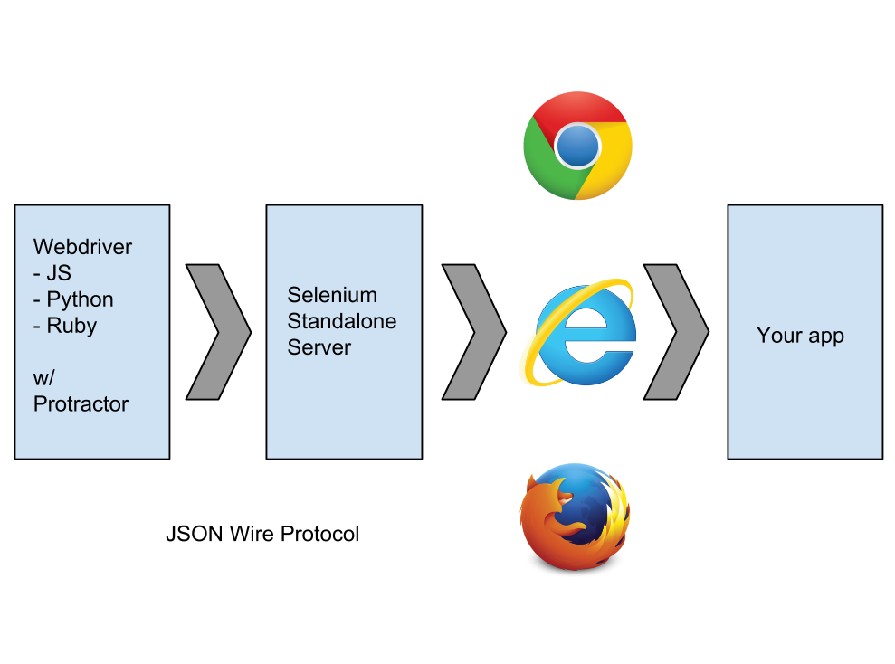

E2E Testing
with
By Pascal Precht / @PascalPrecht
enterJS - July 1, 2014
Hi, I'm Pascal.
Front-end Engineer
I work at CouchCommerce
Teach people at thoughtram
@PascalPrecht on Twitter and GitHub
Creator of angular-translate
♥ animated gifs

My mission today...
Why people don't test
- Missing expertise (How to test? Which tool to use?)
- Takes too long (environment setup etc.)
- works-for-me™ (and without tests)
- ...
Why people should test
- Verifies that system meets requirements
- Improves quality (code and product)
- Helps to *not* deploy bugs
- Makes debugging easier
- ...
What we're gonna cover
- E2E Tests? (What, Why, When)
- Protractor as an E2E Testing framework
- Architecture
- E2E Tests with Protractor
- Protractor tests compared to vanilla WebdriverJS tests
- ...
So next time you deploy an app, you don't feel like this...
But rather like this...
E2E Testing
What?
- Ensures pieces work together
- Checks if app performs as designed from start to finish
- Tests user interaction/usability
Why?
Well... imagine you have to do the following things by hand to test your app:
- Click every link in your app
- Check if form validation works (in all forms!)
- Count items in your search result when using a search bar
- Make screenshots of different states
- ...
When?
- Once components are unit tested
- Before app deploy
Alright, tell us.
What's this Protractor-thingy?
Protractor is an E2E testing framework built on top of Webdriver to make E2E testing for AngularJS applications more fun.
Key Features
- Built on top of Webdriver
- Syntactic Sugar for AngularJS Apps (Locator Strategies)
- Able to run tests on a remote (Selenium) server
- Run tests in different browsers
Why not just Webdriver?
AngularJS gives structure to an app your runner can use:
- Custom attributes and elements
- Dependency Injection
- Asynchronous execution (e.g. $http, $timeout)
Design
Demo
Okay, lets see how Protractor actually helps us.
Configuration
Configure Protractor
exports.config = {
seleniumAddress: 'http://localhost:4444/wd/hub',
capabilities: {
'browserName': 'chrome'
},
baseUrl: 'http://localhost:9000',
onPrepare: function () {
// do something before running tests
},
specs: ['glob/pattern/**/*.spec.js']
...
}Writing tests
Writing tests with WebdriverJS
var wd = require('selenium-webdriver');
var driver = new wd.Builder()
.withCapabilities(wd.Capabilities.chrome())
.build();
driver.get('http://google.com');
driver.findElement(wd.By.name('q')).sendKeys('webdriver');
driver.findElement(wd.By.name('btnG')).click();
driver.wait(function () {
return driver.getTitle().then(function (title) {
retun title === 'webdriver - Google Search';
});
});Also handles control flow
Writing tests with Protractor
describe('something', function () {
beforeEach(function () {
browser.get('some/url');
});
it('should do something', function () {
var foo = element(by.className('foo'));
expect(foo.isDisplayed()).toBe(true);
});
it('should do something', function () {
element(by.input('search')).sendKeys('bar');
element(by.buttonText('submit'));
expect(element(by.className('search-result')).isDisplayed())
.toBe(true);
});
});Global variables in Protractor
browser- Actual Webdriver wrapperby-WebdriverBywrapperelement-ElementFinderandElementArrayFinder$-browser.$shorthand (wrapselement)$$-browser.$$shorthand (wrapselement.all)protractor- Protractor instance
Finding elements
element() and element.all()
element(locator) returns a single WebElement:
element(by.binding('search')).isPresent();
element(by.binding('search')).click();element.all(locator) returns a collection of WebElements:
element.all(by.className('fancy-button')).get(0).click();
element.all(by.className('fancy-button')).each(function (button) {
// do something with button
});Locator Strategies
WebDriverJS Locators
webdriver.By.classNamewebdriver.By.csswebdriver.By.idwebdriver.By.jswebdriver.By.linkTextwebdriver.By.partialLinkTextwebdriver.By.tagNamewebdriver.By.xpath
Protractor Locators
| HTML | Locator |
|---|---|
<span>{{yourName}}</span> |
element(by.binding('yourName')); |
<input ng-model="password"> |
element(by.input('password')); |
<tr ng-repeat="foo in foos"> |
element(by.repeater('foo in foos'))
.row(1)
element(by.repeater('foo in foos'))
.column('foo.bar');
|
<li class="pet">Dog</li> |
element(by.cssContainingText('.pet', 'Dog')); |
Isn't it a pain to write these over and over again?
YES!
Page Objects to the rescue!
Page Objects
- A pattern to encapsulate parts of app logic
- Makes repetitive tasks reusable
- Improves readability of your tests
Page Object Definition
var LoginPage = function () {
this.usernameInput = function () {
return element(by.css('.username-input'));
};
this.passwordInput = function () {
return element(by.css('.password-input'));
};
this.loginButton = function () {
return element(by.css('.login-button'));
};
this.login = function (username, password) {
this.usernameInput().sendKeys(username);
this.passwordInput().sendKeys(password);
this.loginButton().click();
};
};
module.exports = new LoginPage();Usage
var LoginPage = require('./loginPage.js');
it('should do something', function () {
LoginPage.usernameInput().sendKeys('username');
LoginPage.passwordInput().sendKeys('secret');
LoginPage.loginButton().click();
...
});
it('should do something', function () {
LoginPage.login('Pascal', 'idonttellya');
...
});
What if I get stuck?
Let's debug!
Pausing to debug
it('should do something', function () {
browser.get('some/url');
// set debugger before failing expectation
browser.debugger();
expect(thisWillFail).toBe(true);
});
$ protractor debug protractor.conf.js
Also inserts window.clientSideScripts into the browser
Interactive element explorer
$ ./bin/elementexplorer.js http://some-url.com> element(by.id('foo')).getText()> browser.get('http://enterjs.de');Taking screenshots
Yes, even *that* is possible
browser.takeScreenshot() makes taking screenshots a breeze.
var fs = require('fs');
function writeScreenshot(data, filename) {
var stream = fs.createWriteStream(filename);
stream.write(new Buffer(data, 'base64');
stream.end();
}
it('should do something', function () {
browser.takeScreenshot().then(function (png) {
writeScreenshot(png, 'screenshot.png');
});
});
Demo
*applause*
What else?
Running partial suites
exports.config = {
seleniumAddress: 'http://localhost:4444/hub',
capabilities: {
'browserName': 'chrome'
},
suites: {
app: 'src/app/*.spec.js',
search: 'src/app/search/*.spec.js'
}
};$ protractor conf.js --suite searchMulticapabilities
exports.config = {
seleniumAddress: 'http://localhost:4444/hub',
multiCapabilities: [
{
'browserName': 'chrome'
},
{
'browserName': 'firefox'
}
]
...
};Read more about browser setup here!
Hey, that's cool. But I don't have all these browsers on my local machine.
Running E2E tests on a remote server
- Testing made awesome
- Browser & OS Platforms
- No VM setup & maintenance
- Video & screenshots
- Mobile testing
Configuration
exports.config = {
seleniumAddress: 'http://localhost:4444/hub',
capabilities: {
'browserName': 'chrome'
},
sauceUser: 'USERNAME',
sauceKey: 'KEY',
suites: {
app: 'src/app/*.spec.js',
search: 'src/app/search/*.spec.js'
}
};Demo
What to expect in the future?
V.1.0.0 is on its way!